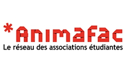
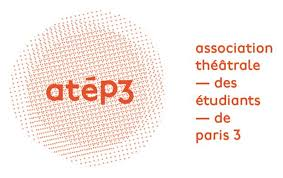
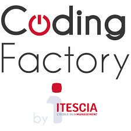
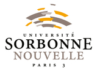

Expérience professionelle et associative
2019-2020
-
Volontaire en service civique à Animafac
2015-2018
-
Bénévole au sein de l'Association théâtrale des Étudiants de Paris 3 (responsable technique puis co-président)
- Vacataire de la fonction publique pour la maison des examens (SIEC)
2014
- Équipier polyvalent à la papèterie Adom Club
Formations
2020
-
L1 Développeur Full-Stack à la Coding Factory by ESIEE Tech
2015-2016
-
M1 d'Études Théâtrales à l'Université Sorbonne Nouvelle Paris 3
2012-2015
- Licence d'Études théâtrales à l'Université Sorbonne Nouvelle Paris 3
- Élève au cours d'Art Dramatique Jean-Laurent Cochet
2012
- Baccalauréat littéraire